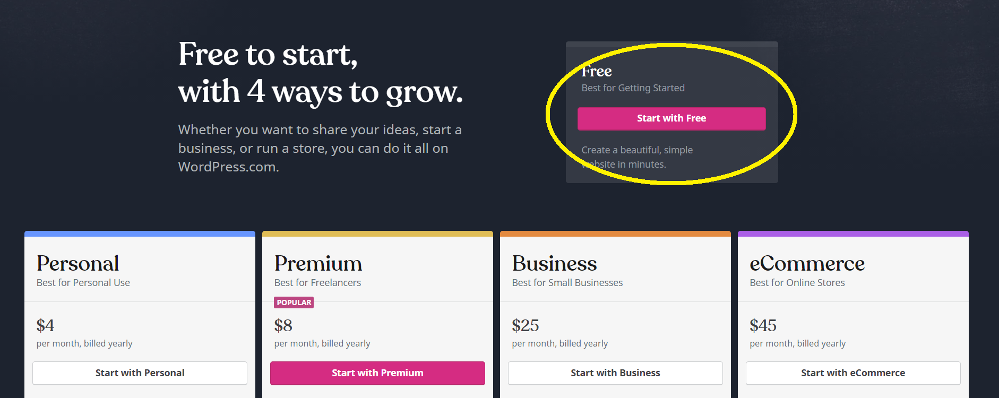
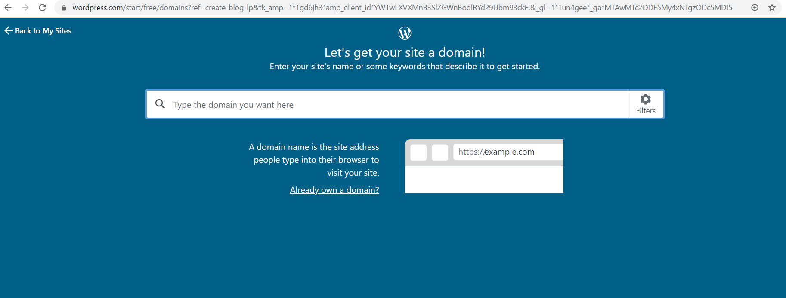
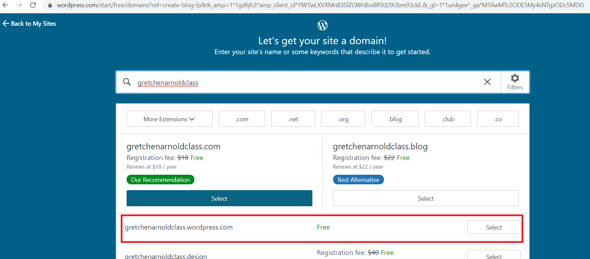
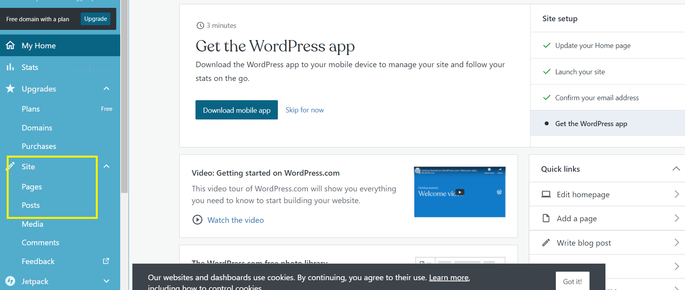
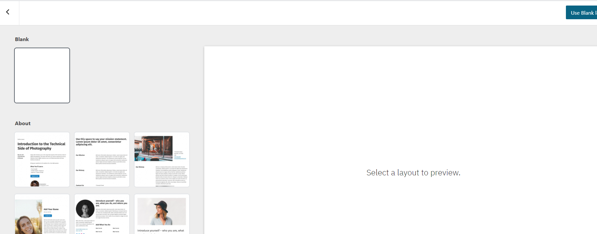
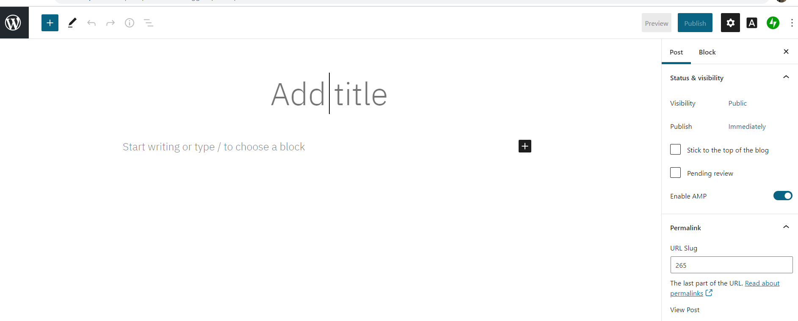

WordPress
Getting Started with Wordpress.com
There are two different versions of Wordpress, one is Wordpress.org and the other is Wordpress.com. The .com version provides hosting and ready to use templates for your blog, it also provides you with a free domain name if you choose the one that includes wordpress in its name. The .org version is more desirable but needs third party hosting, i.e. a space were your website can live on a server. This is much more involved and I recommend watching this Tutorial to get a better understanding of how this works, there are different hosting options and I would advise some googling to finde the best option instead of simply using what is mentioned in the video.
However, this guide is for wordpress.com, as it is free on all levels and does not require for you to find hosting on your own. The free version is of course very limited and does not contain all the plugins that are advertised on their website, but it still offers a great variety of options.
When you go on create blog https://wordpress.com/create-blog/ Choose the free plan
As a next step it will ask you to pick your domain, this could literally be anything, either a creative name relating to your project, your personal name, or anything else. You should also consider if you are planning on using this for the future or just this project.
As you can see here again there is a free option, this one will just include the name wordpress in its domain name. It will ask you for contact details, for which you can simply use your slu email address, as long as you will have access to it.
When you are finally settled with logging in, it is time to set up your page. If you decide you want to use this website in the future, you can create subpages. On the left sidebar you can see pages and posts.
When clicking on either page or post the interface will look similar to this, and you simply click on create new page or post to create new entry.
When creating pages you can add different subpages to your main page, such as about page, or different project pages, or perhaps even a portfolio site. Choose whichever one you would like and the site will give you a template version with different blocks for text and images. When you are done laying out the page, in the upper right corner there will be a button where you can publish the page and make it available to the public.
Posts work in a similar way, but are primarily used as blog entries on your page. So if you’re working on a project you can have a page which features images and background information as well as blog posts which will lead readers to a specific blog entry.
As you can see here, blog entries are much like a word document. Of course you could simply feature them on your main page, but depending on the projects, creating subpages might be a useful tool to design the website. Agan as with the pages, in the upper right corner you have a button which will show you a preview, but next to it is a button which will publish the blog entry. While this makes it available to the public you can always update your entries, as well as take them of the web by turning them back into drafts.